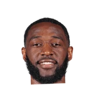

Rajon Rondo on replacing Ian Clark's minutes at backup point guard:
“I think we're signing somebody else. It's the Pelicans, so we'll probably have someone else in here in a couple hours and we'll go from there.”

3 quotes about Ian Clark from 3 players, coaches and executives, newest first. Each one links to its original source.
Rajon Rondo on replacing Ian Clark's minutes at backup point guard:
“I think we're signing somebody else. It's the Pelicans, so we'll probably have someone else in here in a couple hours and we'll go from there.”
“Me and Ian Clark were talking a few weeks ago, and we were like, 'Yo, he really plays with us now!'”
Ethan Sherwood Strauss:Steve Kerr on Stephen Curry lifting Ian Clark in celebration:
“What are you doing?! I thought you were injured. Hopefully he'll have just as much joy but not as much display, physically of that joy.”